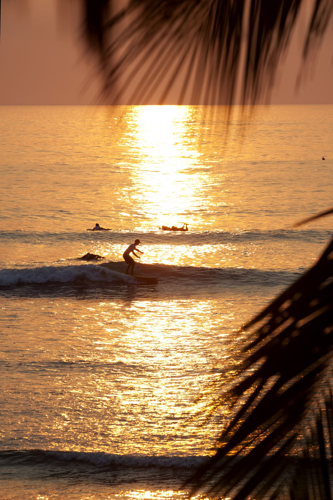

Магия длинных волн
Мы едем в скрытую жемчужину тихоокеанского побережья, которую называют «машиной для лонгборда». Океан здесь рождает одну из самых длинных левых волн в мире: мягкую, предсказуемую и бесконечную.
Это идеальный полигон, чтобы отточить стиль и наслаждаться чистым скольжением.


Атмосфера
Жизнь в ритме slow-living. Маленькая деревня, где нет толп, а всё внимание сосредоточено на качестве проездов и закатной эстетике. Здесь вы перестаете торопиться.


Оахака / День Мертвых
После недели в океане мы сорвемся в Оахаку. Важно быть там именно в День Мертвых — это глубокая традиция с алтарями, свечами и ночными шествиями. Настоящая мексиканская мистика.


Вопросы
Какой уровень катания нужен?
Мексика идеальна для тех, кто уже ловит волну и едет вдоль стенки. Волна очень мягкая, так что это лучший способ прокачать стиль.
Как мы добираемся до Оахаки?
После серф-части мы организованно летим или едем в Оахаку. Вся логистика внутри Мексики уже продумана.
Безопасно ли это?
Илья живет в Азии 10 лет и знает специфику диких локаций. Мы выбираем проверенные места и жилье премиального уровня.